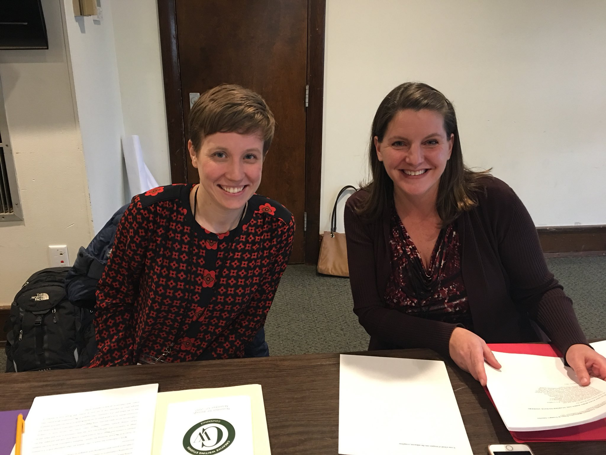

Collaborative Poets: Amy Ash and Callista Buchen


Callista
Callista Buchen is an assistant professor at Franklin College. She is the author of the full-length collection Look Look Look (Black Lawrence Press, 2019), as well as of the chapbooks The Bloody Planet (Black Lawrence Press, 2015) and Double-Mouthed (dancing girl press, 2016).
Amy and Callista regularly lead workshops on collaborative writing.
Download an example their workshop content